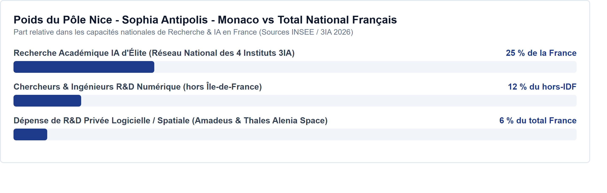
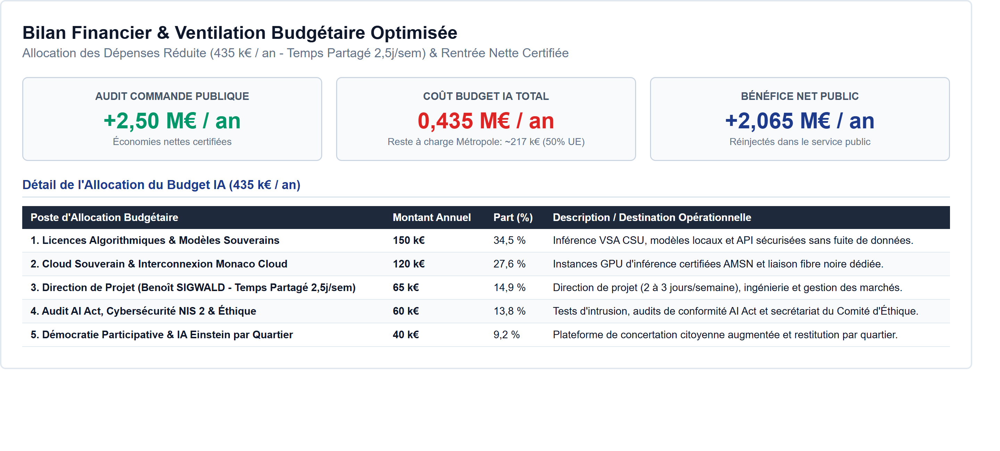

Une doctrine d'austérité intelligente conçue pour M. Éric Ciotti. Basée sur le Pacte Nice IA, elle privilégie l'optimisation des deniers publics, le renforcement de la sécurité de proximité, et le co-financement européen direct sans dépendance régionale.
Analyse des forces en présence : synergie Nice-Monaco, pôle académique 3IA Côte d'Azur et captation directe des fonds européens pour affirmer l'indépendance métropolitaine.
Alignement de la Mairie et de la Métropole pour déployer une gouvernance unifiée et un pilotage commando opérationnel de la transition technologique.
Exploitation de la puissance académique (Sophia Antipolis, 3IA Côte d'Azur) : 2 700 entreprises de pointe et 5 500 chercheurs au service du bassin niçois.
Monaco dispose de capitaux financiers majeurs mais manque d'échelle territoriale. Nice offre le territoire d'expérimentation et le CSU en échange d'infrastructures.
Face aux blocages budgétaires locaux, Nice mise sur les subventions directes de l'Union Européenne (Horizon Europe, Digital Europe). Le budget total IA est co-financé à 50 % par l'UE, réduisant de moitié le reste à charge réel de la collectivité.

L'IA mise au service de la vie quotidienne des habitants : sécurisation de l'espace public, amélioration de la propreté urbaine et assistance de proximité.
Boost de 4 300 caméras par l'IA VSA. Détection instantanée des incivilités et menaces en temps réel pour rediriger les policiers vers le terrain.
Service d'appel intelligent disponible à toute heure. Spécialement calibré pour l'accompagnement des seniors et l'absorption des flux d'appels administratifs récurrents.
Routage prédictif et dynamique des bennes et véhicules de voirie. Signalement automatisé des encombrants pour une propreté rétablie sous 6 heures.
L'optimisation des structures métropolitaines pour réaliser des gains financiers de masse et garantir l'étanchéité cyber du territoire.
Contrôle systématique par IA de 100 % des factures, devis et bordereaux métropolitains. Élimination automatique des doublons et anomalies de prix.
SOC métropolitain souverain fonctionnant 24h/24 pour contrer les rançongiciels et isolation hermétique (Air-Gap) du réseau sensible du CSU.
Hébergement souverain externalisé du SI municipal. Mutualisation avec la Principauté pour éliminer les besoins de datacenters propres.
Un pont technologique et juridique exceptionnel avec la Principauté de Monaco pour servir de modèle national de conformité (AI Act) et soutenir l'éducation locale.
Le partenariat avec Monaco sert de clé de voûte pour débloquer les financements européens à taux maximal, en combinant souveraineté de stockage et souveraineté d'expérimentation.
Nice s'impose comme la sandbox de référence en France pour la mise en conformité des logiciels et modèles d'IA avec la nouvelle réglementation européenne.
Mise à disposition gratuite d'une bibliothèque de cas d'usage souverains pour accélérer la transition technologique des petites et moyennes entreprises métropolitaines.
Ateliers gratuits hebdomadaires pour les familles et séniors dans les centres AnimaNice (Vieux-Nice, Cimiez, Ariane, Fabron) pour maîtriser les IA génératives au quotidien.
Accès souverains et gratuits aux outils de recherche d'IA pour les étudiants et lycéens, via l'Université Côte d'Azur (UCA). 2 000 jeunes ciblés.
Présence de médiateurs numériques formés dans chaque mairie annexe pour accompagner les citoyens et rompre l'exclusion liée à l'informatique.
Comité de Niçois tirés au sort pour évaluer l'impact éthique des technologies déployées et contrôler l'étanchéité des données stockées.
Déploiement jalonné sur 3 ans, coprésidé par Éric Ciotti, sous financement partagé à 50 % avec l'Europe.
Nomination de la gouvernance (AMO Benoît Sigwald), lancement de l'audit des contrats de marchés et cadrage technique avec Monaco Cloud.
Mise en route de la vidéo VSA du CSU, lancement d'Allo Niçois vocal et mesure des premières économies d'audit commande publique.
Migration complète du SI municipal et établissement de la zone franche transfrontalière Nice-Monaco avec retour sur investissement validé.

Ajustez le volume d'achat audité et le taux de détection pour estimer le bénéfice net public par rapport au coût commando de la Métropole.
Toutes les affirmations chiffrées du site et du document stratégique sont sourcées et vérifiables. Retrouvez l'index complet des 36 sources ci-dessous.
| Réf | Source Documentaire / Justification scientifique | Indicateur Chiffré |
|---|